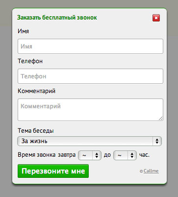

Давайте посмотрим, как работает CallMe. Нажмите на любую из ссылок ниже. Кликайте на любую ссылку, чтобы показать форму заказа. Вообще на любую. Кликайте на любую из них повторно, чтобы форма скрылась.
Все очень просто: любому объекту, который должен по клику показывать или скрывать форму, добавляйте аргумент:
class="callme_viewform"

Варианты темплейтов
В комплекте 6 различных скинов, которые меняются при помощи CSS. Чтобы выбрать другой скин, меняйте переменную cme_template.
Все настройки указываются в файле /callme/js/config.js. Чтобы изменить поля, которые появляются в форме, укажите их названия в переменной cme_fields через запятую. Для того, чтобы поле было не просто текстовым, а textarea, перед его именем добавьте минус.
Все настройки Callme
// отображать ли снопку вызова скрипта справа
var cme_bt = 1;
// укажите через запятую названия полей
// textarea - ставьте перед названием минус (-)
// select - ставьте перед названием "!" и разделяйте варианты для выбора таким же символом
var cme_fields = "Имя, Телефон, -Комментарий";
// надпись на кнопке в форме
var cme_title = "Заказать бесплатный звонок";
// заголовок формы
var cme_button = "Перезвоните мне";
// показывать ли время звонка (0 - нет, 1 - да)
var cme_calltime = 1;
// если указать 1, форма будет по центру экрана
// если 0, будет появляться у места клика
var cme_center = 1;
// начало и конец рабочего дня в часах
// используется для времени звонка
var cme_start_work = 8;
var cme_end_work = 19;
// название папки с темплейтом (default, vk, fb, blackred, hkitty)
var cme_template = 'default';
// лицензия (можно купить на get.nazartokar.com)
var cme_license = "";
var cme_show_cr = 1;
Как подключить
Обратите внимание: если вы обновляете более старую версию Callme, вам нужно будет удалить её код и установить заново. Это несложно, тем не менее, код придётся обновить.
Скачивайте архив (ссылка ниже), распаковывайте его в корневую папку /callme/. Открывайте в Notepad++ или Sublime Text (не блокноте) файл /callme/index.php и меняйте почту на свою.
Установки производится так: перед закрывающимся тегом </head> добавляем такой код:
<script src="/callme/js/callme.js"></script>
Условия использования
Пользоваться можно бесплатно, оставляя копирайт. Если хотите новых версий и технической поддержки, поддерживайте и вы меня материально: здесь все реквизиты. Тех, кто помогает больше всего, я указываю на странице благодарностей со ссылками на их проекты (ТИЦ=350, PR=4). Если необходимо стереть копирайт, переводите 7$ (210 рублей, 60 грн) и стирайте. Но лучше оставьте — чем больше пользователей, тем больше будет новых доработок.
Помощь по установке
Если что-то не получается, вы можете заказать у меня платную установку скрипта на любой движок, для этого пишите на почту. Если хотите ставить своими силами, но что-то не получается, читайте комментарии к постам и форум. С вероятностью 95% ваш вопрос уже решён и ответ вы найдёте, если поищете.
{kind=link}
{kind=link}
{kind=link}
{kind=link}
{kind=link}
{kind=link}